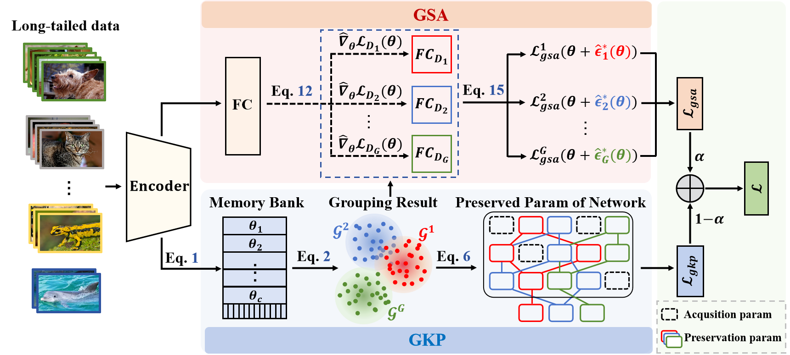
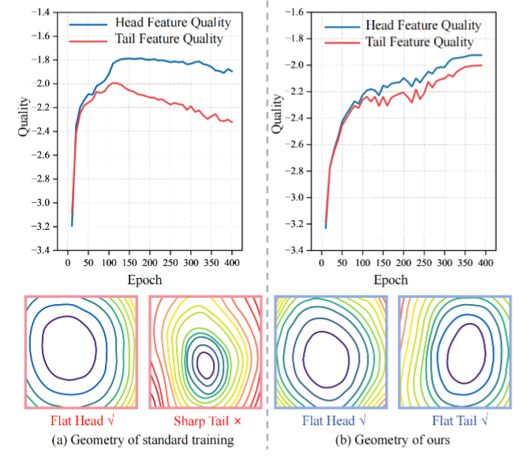
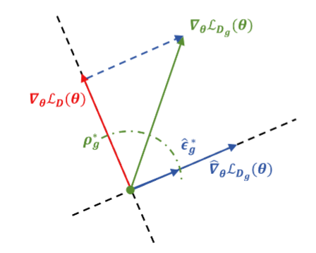
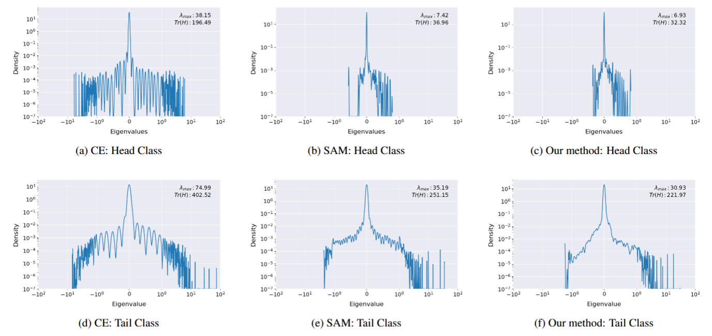

Reframing Long-Tailed Learning via Loss Landscape Geometry
Abstract
Balancing performance trade-off on long-tail (LT) data distributions remains a long-standing challenge. In this paper, we posit that this dilemma stems from a phenomenon called "catastrophic forgetting" in continual learning (the model tends to severely overfit on head classes while quickly forgetting tail classes) and pose a solution from a loss landscape perspective.
We observe that different classes possess divergent convergence points in the loss landscape. Besides, this divergence is aggravated when the model settles into sharp and non-robust minima, rather than a shared and flat solution that is beneficial for all classes. In light of this, we propose a continual learning inspired framework to prevent "catastrophic forgetting". To avoid inefficient per-class parameter preservation, a Grouped Knowledge Preservation (GKP) module is proposed to memorize group-specific convergence parameters, promoting convergence towards a shared solution. Concurrently, our framework integrates a Grouped Sharpness Aware (GSA) module to seek flatter minima by explicitly addressing the geometry of the loss landscape.
Notably, our framework requires neither external training samples nor pre-trained models, facilitating the broad applicability. Extensive experiments on four benchmarks demonstrate significant performance gains over state-of-the-art methods.
Proposed Framework

Our framework consists of two key components: (a) The Grouped Sharpness Aware (GSA) module, which minimizes group-specific sharpness to find flat minima by decomposing the global gradient. (b) The Grouped Knowledge Preservation (GKP) module, which prevents catastrophic forgetting of other groups' optimal parameters using a Memory-based Grouping Strategy.
Key Analysis & Results

Our method flattens the landscape and preserves high feature quality for both head and tail classes.

Gradient decomposition: Extracting the beneficial, group-specific gradient from the head-dominated global gradient.

Eigenvalue density distributions showing our method successfully yields a flatter loss surface compared to CE and SAM.
BibTeX
@inproceedings{chen2026reframing,
title={Reframing Long-Tailed Learning via Loss Landscape Geometry},
author={Chen, Shenghan and Liu, Yiming and Wang, Yanzhen and Wang, Yujia and Lu, Xiankai},
booktitle={Proceedings of the IEEE/CVF Conference on Computer Vision and Pattern Recognition (CVPR)},
year={2026}
}